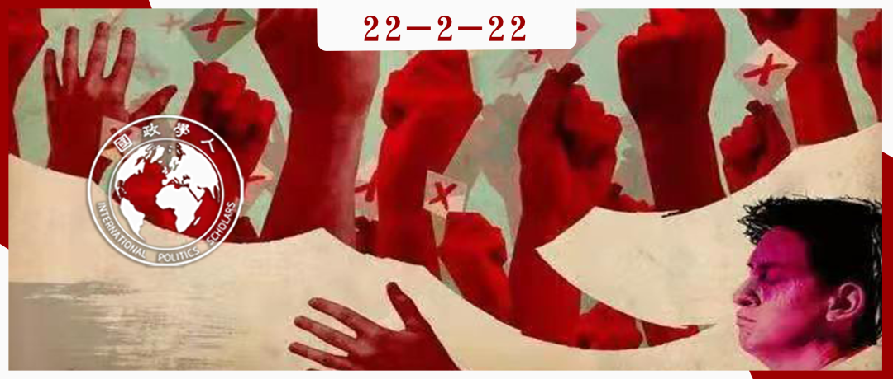

收录于合集

作品简介 ****
作者： Rebecca Adler-Nissen，哥本哈根大学政治学系教授，哥本哈根社会数据科学中心成员；Ayşe Zarakol，剑桥大学政治和国际研究系教授，伊曼纽尔学院研究员。
编译： 陈想（国政学人编译员，对外经济贸易大学国际关系学院）
来源： Adler-Nissen, R., & Zarakol, A. (2021). Struggles for Recognition: The Liberal International Order and the Merger of Its Discontents. International Organization , 75(2), 611-634. doi:10.1017/S0020818320000454

导读
在全球治理面临挑战以及新冠肺炎疫情冲击的背景下，本文探讨自由国际秩序所面临的内部挑战以及外部冲击。文章将反对的行为体分为两个方面：处于核心区的西方民粹主义以及处于半边缘区的竞争性威权政府。文章认为，尽管在利益诉求上，前者希望维系西方在世界等级体系中的优势地位，而后者希望扭转自身在世界等级体系中的劣势地位，但由于自由国际秩序运行中出现的内部矛盾，两方反对势力出于建立不同于当前自由国际秩序的共同期待而联合起来，并从内部对自由国际秩序的维系构成了挑战。文章同时指出，在全球治理的大背景下，国际舞台仍然活跃着数量庞大的第三方力量，这一来自非西方阵营，但不分属于任何一方的力量，可能同时对两方的部分观点产生认同，也正是这一力量将决定自由国际秩序的未来走向。希望维系自由国际秩序的学者们需要准确了解这一方的诉求并对其特殊的利益有所回应，这在替代体系出现之前仍然存在希望。
摘要
自由国际秩序（LIO）目前不仅受到俄罗斯等国的破坏，也受到西方国家选民的破坏。文章认为，两者都是由对自由国际秩序的地位等级的不满所驱动的，而非仅仅由经济不平等所致。从历史和社会学的角度来探讨这种不满情绪可以发现， 反对自由国际秩序的斗争有两股力量：一股在西方核心区，由民粹主义政治家和其选民推动；另一股在半边缘地区，由竞争性专制政府及其支持者推动 。 在这个特定的历史时刻，这些斗争在数字上、意识形态上和组织上相互联系、彼此强化。自由国际秩序也因此正从内部被掏空，并同时面临着严峻的外部挑战。
编译
01
引言
文章首先指出，事实上有两种不同形式的力量在协同工作，从内部破坏自由国际秩序。这两种形式分别是在核心区的“民粹主义”政治家及其选民和在半边缘区（但往往在严格意义上属于内部）的反自由主义或非自由主义政府。文中的“核心”或“中心”指的是对“西方”的标识和符号有强烈文化所有感的社会。文中的“半边缘”指的是可以被归类为（或曾经是）西方，但也可以被归类为（或曾经是）非西方的国家。此外，文章应用承认理论得出，对自由国际秩序不满的根本原因并不是纯粹经济的，而主要是由对其作为一种承认秩序的不满所驱动的。换句话说，半边缘区的许多人将自由国际秩序视为从前以西方为中心的、等级森严的国际秩序的一个更友好的版本，这可以追溯到19世纪的殖民秩序。
自由国际秩序承诺要消除西方和非西方之间的社会和经济不平等，但在其自身的秩序中却从未实现过平等。半边缘国家指责自由国际秩序延续了现代国际体系的历史等级制度，并对其未能履行平等承诺而感到不满。相比之下，在核心区，不满的群体指责自由国际秩序（及其精英）提出了平等的愿望，他们对自由国际秩序破坏或未能保护历史上赋予西方霸权的等级制度而感到不满。
文章从历史和社会学的理论角度来对西方民粹主义和非西方反自由主义进行研究，以解答自由国际秩序面临的挑战。讽刺的是，虽然几十年以来都有威胁来自外部的假设，自由国际秩序真正的弱点却在其内部。 自由国际秩序并没有（还没有）被对手打败，却在面临诸如气候变化和新冠肺炎疫情等其他挑战的情况下，被与（地位）承认相关的不满（情绪）所掏空。 而此时，我们对一个有效的国际秩序的需求比以往任何时候都更加迫切。
02
将自由国际秩序理论化为一种有不满情绪的承认秩序
在国际关系学中，承认通常被理解为一种法律意义上的承认，即国家被承认为主权实体。而在其他领域，如哲学，承认被看作是人类对被了解、被理解和被肯定的重要需求。争取承认的斗争不仅表现为渴望被承认，而且也是无论个人、团体还是国家身份发展的根本。事实上，来自他人的真正的承认几乎是不可能实现的；我们的互动总是涉及一定程度的误认（misrecognition）。争取承认的斗争因此变得复杂。文章在此关注那些曾经拥有或认为自己曾经拥有某种地位，但现在感到被误认的行为体，特别是在过去事实上或想象中失去了某种地位的行为体。
相当一部分文献将承认理论扩展到群体权利，特别是在多元文化主义（multiculturalism）的背景下。有学者认为国家对承认的追求是历史上的偶然，而现代国家尤其需要关心外部承认，因为其在国内需要解决公民承认问题。国际地位的竞争成为国家模拟和产生解决方案的一种手段；如果国家在国际等级制度中排名靠前，即使个人状况并不理想，该国的公民仍会感到被承认。尽管物质成就有助于在国际等级制度中上升，但这种成就并不总是能保证得到承认。
自由国际秩序与此前的秩序不同的地方在于，至少在话语上，它不认可等级制度，特别是在承认方面。 正因为它强调政治建立在平等、权利和理性的概念之上，自由国际秩序被那些对其不满的人认为是虚伪的。这种反感部分源于自由国际秩序没有承认它所继承的一些历史等级制度的重要性；部分源于它虽然强调进步，但未能超越其他等级制度的事实。
03
无法维系的中心：来自核心的不满情绪
在中心区，对自由国际秩序的反感是由那些曾经被政党、国内福利和团结机制照顾的团体所推动的。随着这些核心选民与国内政治精英之间的距离不断拉大，他们越来越认为自由国际秩序是一个在“更好的时代”和他们拥有象征性的特权时不会存在的“官僚机构”。自由国际秩序的确立在很大程度上是一个精英项目，一个可能的原因是“宽容性共识”（permissive consensus）：即公众对外交政策没有明确的偏好。只要政府和专家维持在一个“默许区域”（zone of acquiescence）内，他们就可以进行一系列的外交政策决策。
西方工人阶级专注于攀登社会等级，模仿上层阶级的品味，获得从汽车到教育等物质和象征性产品，并采取与许多非西方国家在20世纪所采取的不一样的策略。在欧洲，随着选民对贸易和合作增加所带来的物质利益的感受日益明显，“宽容性支持”将带来情感支持。部分原因是，这些群体感受到他们是自己所处的民族国家的主人。尽管这些人在一些精英项目中缺乏话语权，但是精英们无论是在表现还是言辞上都会迎合他们。当代，虽然经济问题在西方民粹主义政党的出现和“宽容性共识”的终结中发挥了关键作用，但这种不满的表述也是由被承认的需求所驱动。一些观点将这些群体在教育、住房和工作上的失败归咎于他们自身，催生了一种被污名化的感受。社会上对外来移民和一些少数族群的承认日益上升，也使得他们认为自己遭到了背叛。民粹主义者采取策略，成功地将调动了这些焦虑和不满，将其转化为一种以代表“真正的人民”为核心的明确的社会身份认同。而这种身份界定是不被精英们所承认的。
总而言之， 西方民粹主义蕴含着脆弱和怀旧的情绪，这些情绪越来越多地以反国际主义的形式表达出来，而不是通过传统的左/右翼政治。 随着强烈的积极阶级认同感的萎缩，民粹主义也不断发展成为不同群体的一种可行的应对机制。他们都怀有被边缘化和被误认的感觉，拒绝国际制度并支持内向的民族主义。
04
越来越大的漩涡：半边缘区的不满情绪
自由国际秩序被半边缘区群体视为另一个为其成员提供特权和晋升其国际等级的西方地位俱乐部。“西方”被看作世界的中心；它的标准，从政治到文化，都定义了什么是 “正常”，塑造了人们对国际行为体如何（在内部和外部）行动的期望。那些没有达到这些期望的国家就会被污名化。这最初是通过“文明标准”来实现的，它剥夺了对不“文明”国家平等地位的合法承认，后来在20世纪，人们通过更多的非正式等级制度，如现代与传统、第一世界与第三世界等，对这些国家进行侮辱。这可以被认为是一种“建制者- 外来者”关系：在社会环境中“既定”或较早进入的行为体拥有制定规范的权力，它们把那些“外来者”或后来者看成是不正常的，即使这两个群体之间的物质差异并不显著。
十九世纪末和二十世纪初，许多非西方国家采用了“西方”的规范，包括从衣着规范等看似微不足道的问题到法律规范等更为严肃的问题，以及签署条约和因地位原因加入西方组织。自由国际秩序对半边缘（和非西方）行为体的吸引力不仅仅在于物质利益，还在于承认和归属的问题。将自由国际秩序的建立主要归功于美国的力量、其精英的说服力、经济激励或其规范的内在吸引力，都忽略了许多国家加入的一个主要原因，即 它们认为该秩序是国际体系的内部核心，是一个能给它们带来特权和更多承认的地位俱乐部。
由于自由国际秩序对许多国家的吸引力主要在于承认和接受，加入自由国际秩序并不需要对自由主义的规范或规则进行内化或默许。同样重要的是， 尽管对以西方为中心的等级制度的不满在自由国际秩序之前就已经存在，但自由国际秩序本身的成功却在半边缘国家发挥了重要的作用。 具有讽刺意味的是，在这些社会中更能代表怨恨和反西方群体的政府的崛起中，自由国际秩序本身的成功扮演了重要角色。
05
秩序分崩离析：不满者的联合如何从内部蚕食自由国际秩序
目前国际体系的三个特点使反对者之间的互动更加有力。第一，数字技术加快了思想和行动的全球传播，使那些以前不觉得自己有发言权的人有了发言权。第二，冷战结束后，与该时期相关的意识形态和政党政治在全球范围内走向衰落，消除了以前处于不同阵营的团体和国家之间的合作障碍，正如非西方世界的政党和领导人之间正在形成的网络所显示的那样。这些非自由派领导人因为对自由国际秩序的不满而联合起来，他们相互之间的经济利益和象征性的承认也使得这一网络得以维持。尽管现在提出“国际民族主义”（nationalist international）可能还为时过早，但（民族主义）全球互联的前景正在形成。第三，自由国际秩序的主要弱点是由正式加入这一秩序的行为体或参与秩序内部的各方面行为所产生的。虽然对西方统治的不满并不新鲜，但新鲜的是， 目前的国际挑战者在很多方面都是自由国际秩序的主要受益者。 这削弱了文献中普遍存在的假设，即物质利益会产生思想上的趋同。
06
国际关系理论和自由国际秩序的预言
许多人将自由国际秩序所发生的事情的原因误认为是本体层面的。他们认为，威胁要么是国际的，要么是国内的。如果问题是国际性的，那么它就被视为信息或混合战争的外部挑战，引起国内的事实核查和网络安全以及对国外的军事威慑等综合反应。如果问题被视为国内问题，那么问题就变成了“观众成本”（audience costs），或者说意识形态如何进入外交政策的官僚体系，这要通过审查国内意见的形成和决策过程来解决。
本文的框架提出了一种理解方式，即自由国际秩序所面临的看似不同的挑战来自于相近的承认逻辑。那些希望拯救自由国际秩序的人往往忽略了一个关键问题： 自由国际秩序不仅是一个规则和制度的系统，也是一种承认秩序，无论绝对收益如何，内部的行为体都会产生不满情绪。 希望取消自由国际秩序的政府和选民都从这个秩序的多元性以及它的经济效益中受益。颠覆性的边缘国家和民粹主义西方选民并不是在倡导一个更平等的世界，而是在追求他们自己在国内和国际上的等级愿景。重要的是，除了自由国际秩序的支持者和不满者，还有更多的行为体；西方以外的绝大多数行为体可能不属于任何一方，但又认可两个阵营的某些方面。自由国际秩序的命运掌握在这些多数的行为体手中。那些想要挽救自由国际秩序的人需要回答：自由国际秩序能做什么，来承认这些占多数的行为体，并在秩序的替代方案出现之前就这样做。
词汇整理
自由国际秩序 liberal international order (LIO)
多元文化主义 Multiculturalism
“许可性共识” permissive consensus
“默许区域” zone of acquiescence
“国际民族主义” nationalist international
审校 | 林怡娉 陈勇
排版 | 吴梦婷 王慧瑜
文章观点不代表本平台观点，本平台评译分享的文章均出于专业学习之用, 不以任何盈利为目的，内容主要呈现对原文的介绍，原文内容请通过各高校购买的数据库自行下载。

国政学人
支持学术公益与知识传播
微信扫一扫赞赏作者 __赞赏
已喜欢，对作者说句悄悄话
取消 __
发送给作者
发送
最多40字，当前共字
上一页 1/3 下一页
长按二维码向我转账
支持学术公益与知识传播
受苹果公司新规定影响，微信 iOS 版的赞赏功能被关闭，可通过二维码转账支持公众号。